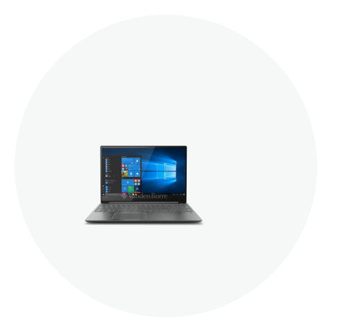

<div class="vtr-widget-device">
	<div class="container-fluid p-40">
		<div class="circleimage"> </div>
		<div class="row mt-20">
			<div class="col">
				<div class="family">{{myDevice.family}}</div>
			</div>
		</div>
		<div class="row">
			<div class="col-12 col-lg-auto px-0">
				<span class="d-lg-none sub-header-separator">
					<fa-icon [icon]="['fas', 'minus']"></fa-icon>
				</span>
				<span class="device-sub-header">{{'device.myDevice.serial' | translate}}: {{myDevice.sn}}</span>

			</div>
			<div class="col-12 col-lg-auto px-0">
				<span class="sub-header-separator">
					<fa-icon [icon]="['fas', 'minus']"></fa-icon>
				</span>
				<span class="device-sub-header">{{'device.myDevice.productNumber' | translate}}:
					{{myDevice.productNo}}</span>
			</div>
			<div class="col-12 col-lg-auto px-0">
				<span class="sub-header-separator">
					<fa-icon [icon]="['fas', 'minus']"></fa-icon>
				</span>
				<span class="device-sub-header text-wrap">{{'device.myDevice.biosVersion'|translate}}:
					{{myDevice.bios}}</span>

			</div>
		</div>
		<div class="row">
			<div class="col">
				<div class="subheader">{{'device.myDevice.subtitle'|translate}}</div>
			</div>
		</div>
		<div class="row">
			<div class="col">
				<ul class="status-list">
					<li *ngFor="let item of deviceStatus"
						[ngClass]="[!item.status?'good':'bad']">
						<div class="container-fluid">
							<div class="row align-items-center">
								<div class="col-auto">
									<div class="status-icon">
										<div class="icon-bkg">
											<fa-icon [icon]="['fas', !item.status?'check':'times']"></fa-icon>
										</div>
									</div>
								</div>
								<div class="col-auto status-block p-0">
									<div class="title"
										[ngClass]="[!item.status?'good':'bad']">
										{{item.title}}
										<span *ngIf="item.systemDetails"
											class='systemDetails'>({{item.systemDetails}})</span>
									</div>


								</div>
								<div class="col-auto text-right ml-auto pr-5">
									<!--Open vantage subapges if isSystemLink===undefined or  isSystemLink  === false then user routerLink to naviagate within Lenovo Vantage Application -->
									<a routerLink="/{{item.path}}"
										*ngIf="item.isSystemLink===undefined || (item.isSystemLink!==undefined && item.isSystemLink===false)">
										<div class="detail"
											[ngClass]="{'highlight':item.asLink}">
											{{item.detail}} <fa-icon [icon]="['fas', 'arrow-right']"></fa-icon>
										</div>
									</a>
									<!--Open Windows Settings /subapges if isSystemLink is not undefined or  then sanitise URL of windows settings page like (ms-settings:storagesense) , link href instead of routerlink value is set to URL-->
									<a *ngIf="item.isSystemLink!==undefined &&  item.isSystemLink===true"
										href="javascript:void(0);"
										(click)="deviceService.launchUri(item.path)">
										<div class="detail"
											[ngClass]="{'highlight':item.asLink}">
											{{item.detail}} <fa-icon [icon]="['fas', 'arrow-right']"></fa-icon>
										</div>
									</a>
									<!-- <div class="arrow">
										<fa-icon [icon]="['fas', 'arrow-right']"></fa-icon>
									</div> -->
								</div>
								<!-- <div class="col-auto">
								</div> -->
							</div>
						</div>
					</li>
				</ul>
			</div>
		</div>
	</div>
</div>
